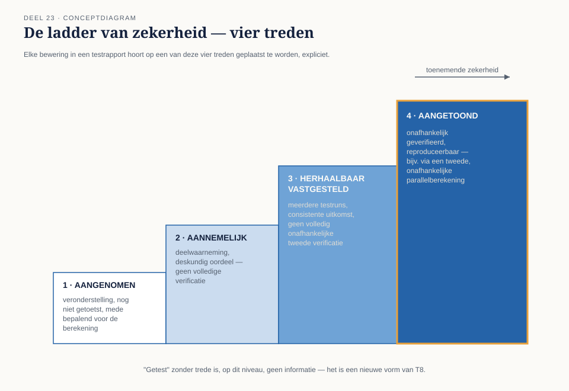
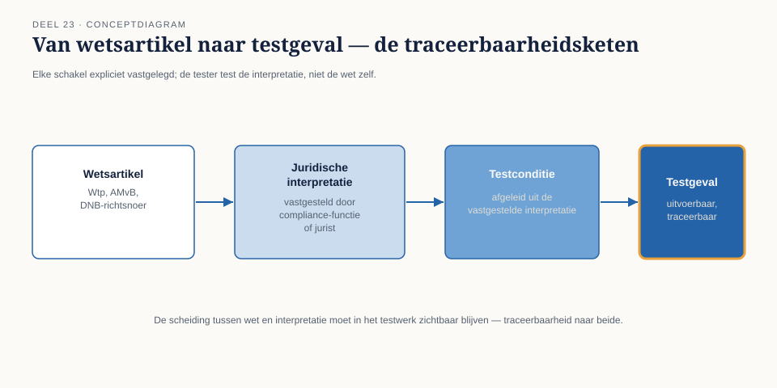

Cursus Testen en Kwaliteitsborging · Niveau 3 (ISTQB) · Deel 23 van 30
Aangetoond, niet aangenomen.
Niveau 1 en 2 werkten met geslaagd/gefaald en met risiconiveaus. Bij de Stelselovergang — de Wtp-transitie, met 1 januari 2028 als uiterste datum — is dat onderscheid niet fijnmazig genoeg. Dit deel opent niveau 3 met de ladder van zekerheid: het instrument waarmee Iris Verweij, nu testverantwoordelijke voor het invaren van bestaande pensioenaanspraken, voortaan elke bewering in een testrapport weegt — en met de reden waarom dit niveau, anders dan de vorige twee, uitsluitend op ISTQB draait.
7secties
±1,5uleestijd + werkboek
4controlevragen
4treden op de ladder
Positionering. Niveau 3 is ISTQB-only: TMAP kent twee examens en geen expertniveau — een bewuste, transparante keuze in deze cursus, geen verzwijging. Dit deel bereidt mede voor op CT-FT (Finance Testing); latere delen van dit niveau bouwen voort richting CT-QDO, CT-AI en de CTEL-expertlijn. Deze cursus is een voorbereiding op deze ISTQB-expertcertificeringen en uitdrukkelijk geen vervanging van het officiële examenmateriaal van istqb.org. Alle formuleringen, figuren en werkvormen in dit materiaal zijn van Ductus; studeer voor het examen altijd óók de officiële bron.
Niveau 3: 23 Testen in de financiële sector (hier) → 24 Testen onder toezicht → 25 Het onomkeerbare testobject → 26 Testprocesverbetering → 27 Testen van AI-componenten → 28 Kwaliteit in productie en DevOps → 29 De testfunctie als tegenspraak → 30 Masterproef: "De onbewijsbare berekening"
01
Waar dit deel over gaat
⏱ 10 min
Casus: de Stelselovergang. De Wtp-transitie, met 1 januari 2028 als uiterste datum. Iris Verweij is nu testverantwoordelijke voor het invaren van bestaande pensioenaanspraken naar het nieuwe stelsel — een eenmalige, grotendeels onomkeerbare berekening over honderdduizenden aanspraken.
TMAP kent twee examens en geen expertniveau — een bewuste, transparante keuze in deze cursus, niet een verzwijging. De TMAP-bouwstenen (deel 11) en het VOICE-denken blijven waardevol en komen impliciet terug (een goed testrapport dient nog altijd een waarde, niet alleen een percentage), maar de certificeringslijn is vanaf hier ISTQB: CT-FT (Finance Testing), CT-QDO, CT-AI, en de CTEL-expertlijn.
Na dit deel kun je:
uitleggen waarom niveau 3 ISTQB-only is, en wat dat betekent voor je certificeringspad;
de ladder van zekerheid toepassen als beoordelingsinstrument voor elke bewering in een testrapport;
regelgeving als testbasis behandelen, met de bijbehorende eisen aan traceerbaarheid;
reconciliatie tussen systemen toepassen als testtechniek voor financiële data.
02
De ladder van zekerheid
⏱ 18 min
Waarom dit niveau een nieuw instrument nodig heeft
Niveau 1 en 2 werkten met het onderscheid geslaagd/gefaald en met risiconiveaus. Bij de Stelselovergang is dat onderscheid niet fijnmazig genoeg: bij een eenmalige, grotendeels onomkeerbare berekening (deel 25) is de vraag niet alleen "is dit getest" maar "met welke mate van zekerheid weten we dit, en hoe tonen we dat aan?"
Vier treden
Aangetoond — onafhankelijk geverifieerd, reproduceerbaar, met een tweede, onafhankelijke berekeningsweg bevestigd. Herhaalbaar vastgesteld — meerdere keren getest met consistente uitkomst, maar zonder volledig onafhankelijke tweede verificatie. Aannemelijk — plausibel op basis van beperkte steekproef, deskundig oordeel, of indirecte aanwijzingen, zonder volledige verificatie. Aangenomen — een veronderstelling, nog niet getoetst, die de basis van de berekening mede bepaalt.

Figuur 23-1 — De ladder van zekerheid als vier treden, met bij elke trede een voorbeeld uit de invaarberekening.
Kernzin
Elke bewering in een testrapport hoort op een van deze vier treden geplaatst te worden, expliciet. "Getest" zonder trede is, op dit niveau, geen informatie — het is een nieuwe vorm van T8.
Waarom dit de hele cursus samenbrengt
De ladder is geen nieuw idee maar de scherpste vorm van een les die door de hele cursus loopt: niveau 1, deel 9 waarschuwde al tegen een percentage zonder besluitwaarde; niveau 2, deel 21 leerde schatten met expliciete aannames in plaats van schijnzekerheid. De ladder maakt dat onderscheid nu tot een vast, gedeeld vocabulaire — elke bewering in dit niveau wordt ernaar teruggebracht.
Controlevraag
Uit Werkboek deel 23, Opdracht 23.1 — Plaats op de ladder
1Voor elke bewering: welke trede van de ladder van zekerheid? a. "De berekening is met een onafhankelijke, tweede rekenmethode geverifieerd en komt overeen." b. "We hebben tien testgevallen uitgevoerd, allemaal geslaagd, maar geen onafhankelijke tweede verificatie." c. "Op basis van een steekproef van twintig dossiers lijkt de berekening correct." d. "We veronderstellen dat de brondata volledig en actueel is — dit is nog niet apart getoetst."Toon antwoord
a. Aangetoond. b. Herhaalbaar vastgesteld. c. Aannemelijk. d. Aangenomen.
Uit Werkboek deel 23, Opdracht 23.2 — Herschrijf zonder ladder-taal
2Herschrijf de vier beweringen uit de vorige opdracht zonder de ladder-terminologie, zoals ze vermoedelijk in een gewoon testrapport zouden staan ("getest, geslaagd"). Wat gaat er verloren?Toon antwoord
Zonder ladder-taal vervagen alle vier tot ongeveer "getest, in orde" — precies het probleem dat dit deel aankaart. Het verschil tussen (a) en (d) is voor de lezer van het rapport onzichtbaar zonder expliciete trede, terwijl het verschil in werkelijkheid enorm is.
03
Regelgeving als testbasis
⏱ 14 min
Een testbasis die je niet mag interpreteren zoals je wilt
Niveau 1, deel 2 behandelde de testbasis in het algemeen — een functioneel ontwerp, een user story. Regelgeving (de Wet toekomst pensioenen, onderliggende AMvB's, DNB-richtsnoeren) is een bijzondere testbasis: zij is niet onderhandelbaar, verandert via een formeel proces, en een verkeerde interpretatie is geen bevinding maar een compliance-risico.
Van wettekst naar testconditie
De vertaalslag van een wetsartikel naar een testconditie vereist een extra stap ten opzichte van niveau 1, deel 2: een juridische interpretatieslag, vaak vastgelegd door een compliance-functie of jurist, vóórdat de tester een testconditie kan afleiden. De tester test niet de wet zelf, maar de vastgestelde interpretatie ervan — en die scheiding moet in het testwerk zichtbaar blijven (traceerbaarheid, nu naar de interpretatie én naar het onderliggende artikel).

Figuur 23-2 — Traceerbaarheidsketen: wetsartikel → juridische interpretatie → testconditie → testgeval, elke schakel expliciet vastgelegd.
Controlevraag
Uit Werkboek deel 23, Opdracht 23.3 — Van wettekst naar testconditie
1Gegeven een fictief, vereenvoudigd wetsartikel: "Aanspraken worden ingevaren tegen de marktwaarde per de peildatum, met een correctie voor solidariteitsreserve indien van toepassing." Formuleer (a) een mogelijke juridische interpretatievraag die eerst beantwoord moet worden, en (b) minstens twee testcondities die pas na die interpretatie kunnen worden afgeleid.Toon antwoord
Interpretatievraag: wat geldt precies als "van toepassing" voor de solidariteitsreservecorrectie — een vraag die de wettekst alleen niet beantwoordt. Testcondities (na interpretatie): peildatum correct toegepast op de marktwaardebepaling; correctie wel/niet toegepast conform de vastgestelde interpretatie. Zonder de interpretatieslag zijn deze testcondities niet af te leiden — de tester test de interpretatie, niet de wet zelf.
04
Compliancetesten
⏱ 10 min
Wat het toevoegt aan functioneel testen
Compliancetesten toetst niet alleen of het systeem doet wat de interpretatie voorschrijft (functionele geschiktheid, niveau 2 deel 14), maar of dat aantoonbaar en herhaalbaar is op het niveau van de ladder van zekerheid — een compliancetest die slaagt maar niet reproduceerbaar is gedocumenteerd, telt op dit niveau niet als "aangetoond".
Continue geautomatiseerde compliancevalidatie
Vergelijkbaar met contracttesten (niveau 2, deel 16): een geautomatiseerde test die bij elke wijziging in de rekenregels controleert of de uitkomst nog steeds aan de vastgestelde interpretatie voldoet, in plaats van dit periodiek handmatig te controleren. Dit voorkomt dat een regelwijziging geruisloos een compliance-afwijking introduceert — dezelfde logica als T3 (niveau 1, verouderde testbasis) maar nu toegepast op regelgeving.
05
Reconciliatie tussen systemen
⏱ 12 min
Het idee
Reconciliatie vergelijkt twee onafhankelijk vastgestelde totalen (bijvoorbeeld: de som van alle individuele ingevaren aanspraken versus het totale collectieve vermogen dat wordt overgedragen) om te controleren of zij overeenkomen. Een afwijking, hoe klein ook, is een signaal dat ergens in de keten iets niet klopt.
Waarom dit een aparte testtechniek verdient
Reconciliatie test niet één regel of één berekening, maar de optelsom van duizenden — een technische vorm van de ladder van zekerheid toegepast op schaal: een individuele berekening kan "aangetoond" zijn, maar pas reconciliatie op totaalniveau toont aan dat er onderweg niets is weggevallen of dubbel geteld.
Kernzin
Duizend correcte individuele berekeningen bewijzen nog niet dat de optelsom klopt. Reconciliatie is de test die dat wél bewijst — of juist niet.
Controlevraag
Uit Werkboek deel 23, Opdracht 23.4 — Ontwerp een reconciliatiecontrole
1Voor de invaarberekening: ontwerp een reconciliatiecontrole die twee onafhankelijk vastgestelde totalen vergelijkt. Wat zijn de twee totalen, en wat betekent een afwijking?Toon antwoord
Bijvoorbeeld: de som van alle individueel berekende ingevaren aanspraken versus het onafhankelijk vastgestelde totale over te dragen collectieve vermogen. Een afwijking betekent dat ergens in de keten iets is weggevallen, dubbel geteld, of dat de individuele berekeningen een systematische fout bevatten die pas op totaalniveau zichtbaar wordt.
06
Waarom TMAP hier ontbreekt, en de examenaansluiting
⏱ 8 min
Consistent met §1: vanaf dit deel vervalt het vaste TMAP-leesblok. Waar het VOICE-denken relevant blijft (een compliancetest dient nog steeds een waarde: aantoonbare rechtmatigheid), wordt dat niet langer apart benoemd maar verondersteld als achtergrond.
Dit deel bereidt voor op CT-FT (Finance Testing): sectorstructuur, compliancetesten, risicogebaseerd testen, datatesten en -management inclusief reconciliatie, functioneel en niet-functioneel testen, GenAI, automatisering in gereguleerde omgevingen. Examen 40 vragen, 45 punten, 30 punten slaggrens, 60 minuten. CTFL is voorwaarde. Verifieer bij aanvang van een cursusgroep het actuele examenaanbod, gezien de recente publicatiedatum van dit certificaat.
07
Terug naar de casus
⏱ 8 min
Iris begint dit niveau met een instrument dat de rest ervan zal blijven dragen: elke bewering die zij vanaf nu over de invaarberekening doet, plaatst zij expliciet op een van de vier treden. Dat is geen bureaucratie — het is het enige verschil tussen een testrapport dat een toezichthouder kan vertrouwen en een testrapport dat alleen klinkt alsof het vertrouwen verdient.
Huiswerk. Beschrijf voor een testrapport uit je eigen werk (of fictief) drie beweringen, en plaats ze op de ladder van zekerheid. Neem mee naar deel 24.
Vooruit naar deel 24. De ladder van zekerheid is een instrument dat Iris zelf kan toepassen. Maar bij de Stelselovergang volstaat het niet dat zij overtuigd is — een toezichthouder moet het kunnen navolgen. Deel 24 gaat over testen onder toezicht: wat DNB en AFM verwachten, dossiervorming, en de vraag "kunt u dat aantonen?"
Verder naar deel 24
De ladder van zekerheid is een instrument dat Iris zelf kan toepassen. Maar bij de Stelselovergang volstaat het niet dat zij overtuigd is — een toezichthouder moet het kunnen navolgen. Deel 24 gaat over testen onder toezicht: wat DNB en AFM verwachten, dossiervorming, en de vraag "kunt u dat aantonen?"